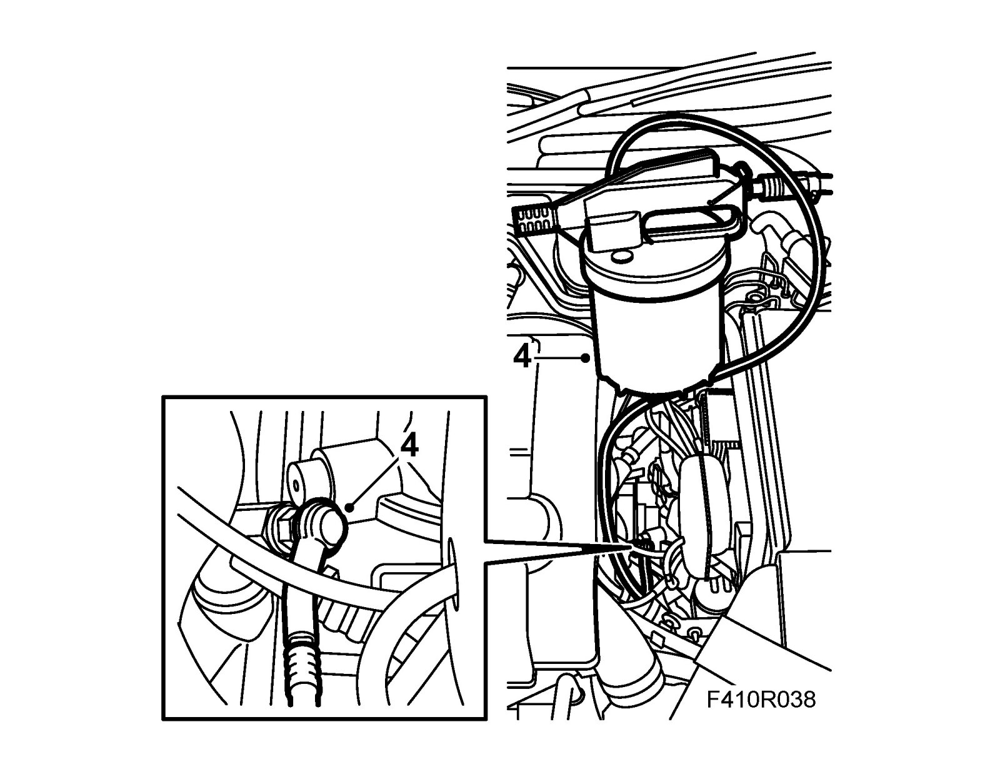
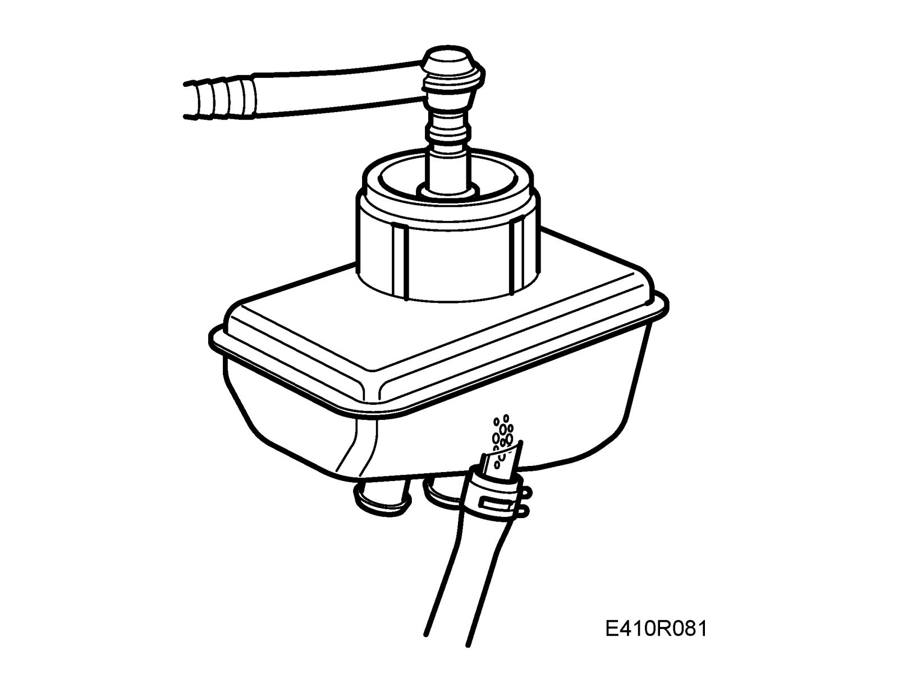

Clutch Fluid: Service and Repair
Bleeding the clutch hydraulic system in the carFor bleeding the slave cylinder, refer to Bleeding the slave cylinder. Procedures
1. Unscrew the cover from the brake fluid reservoir.
2. Top up the brake fluid in the reservoir as necessary.
3. Undo the bleed nipple.

4. Connect 88 19 096 Bleeding equipment to the bleed nipple.
5. Connect compressed air to the bleeding tool and bleed the clutch until clear fluid runs from the nipple.
6. Tighten the bleed nipple and remove the bleeding tool.
7. Fit 30 05 451 Adapter, cooling system tester to the brake fluid reservoir.
8. Press the hose on the brake bleeder against the nipple and bleed the reservoir for about 1 minute, or until no bubbles rise to the surface.

9. Check clutch operation and top up brake fluid to the correct level.
10. Refit all components.